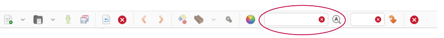
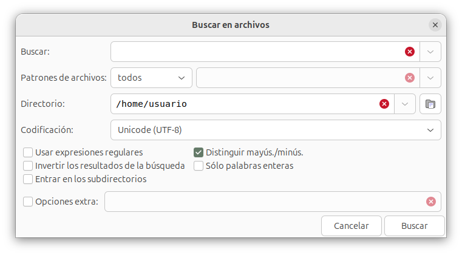

Búsqueda de texto¶
Como cualquier editor que se precie, Geany cuenta con funcionalidades varias para encontrar un fragmento de texto en los documentos. Aquí veremos las diferentes opciones.
Buscar mediante barra de herramientas¶
La barra de herramientas tiene una caja de texto para introducir texto a buscar. Es la que tiene un botón "lupa" a su derecha:

A medida que tecleamos algo en esa caja, Geany muestra resaltada en el texto del documento la primera coincidencia que encuentre. Pulsando en el icono adyacente con forma de lupa, se muestran las sucesivas coincidencias.
Manteniendo el cursor en la caja de búsqueda, Enter hace búsquedas sucesivas, mientras que Shift+Enter lo hace hacia atrás.
La búsqueda es case-insensitive. No se distingue entre mayúsculas y minúsculas. Si queremos una búsqueda más elaborada, usar la opción de menú Buscar.
Buscar mediante opciones de menú¶
El menú Buscar abre una caja de diálogo para buscar texto en uno o más documentos. La ventana de diálogo permite introducir las especificaciones de búsqueda:

Introducimos el texto a buscar y vamos pulsando en los botones [Siguiente] para ir saltando de una a otra coincidencia encontrada, o [Anterior] para buscar hacia atrás.
Podemos seguir editando el texto con la ventana de diálogo abierta. La ocultamos con el botón [Cerrar]. Se puede configurar para que se cierre automáticamente al pulsar en los botones siguiente/anterior. Se hace con el menú Editar > Preferencias > General > Varios > Buscar > Ocultar diálogo de búsquedas.
En la ventana de diálogo tenemos una opción "usar secuencias de escape", que permite incluir en el texto de búsqueda unas secuencias especiales de caracteres, que representan determinado carácter. Por ejemplo, si buscamos:
Hola\nAdios
La secuencia \n representa un salto de línea, por lo que se buscará un texto de diez caracteres, siendo el quinto el de salto (new line):
H o l a salto A d i o s
Otras secuencias de escape de interés son:
\tindica un carácter de tabulación.-
\uXXXXrepresenta un carácter Unicode mediante su código hexadecimalXXXXPor ejemplo, la letra griega PI (π) se indica mediante la secuencia:\u03C0¿Cuales son los códigos que corresponden a cada carácter? Internet tiene multitud de páginas de consulta. Por ejemplo, la Wikipedia.
-
\\representa una barra invertida. Esto es necesario para considerar la barra como un carácter más a buscar, no como inicio de una secuencia de escape. Por ejemplo, si introducimos:texto1\\texto2se buscará el texto:
texto1\texto2
En la ventana de diálogo tenemos un desplegable "Buscar todos", que muestra u oculta las opciones para buscar todas las coincidencias en un solo paso. Pueden ser:
- Si seleccionamos En el documento, muestra una lista de líneas coincidentes en la ventana de mensajes.
- Si seleccionamos En la sesión, hace lo mismo para todos los documentos abiertos
- Pulsando sobre Marcar muestra todas las coincidencias en la ventana de edición, resaltándolas coloreadas en el texto del documento. Las marcas desaparecen mediante el menú Documento > Borrar marcas.
Buscar desde el inicio¶
Cuando la búsquedas llega al final del documento, se pregunta si queremos continuar volviendo al inicio del texto de nuevo. Este comportamiento puede establecerse por defecto, sin necesidad de preguntar. Se configura con Editar > Preferencias > General > Varios > Buscar > Reiniciar búsqueda.
Ocultar ventana de diálogo¶
Cuando se encuentra una coincidencia, se mantiene abierta la ventana de diálogo de búsquedas, para seguir pulsando en los botones Anterior/Siguiente. Podemos establecer que se cierre la ventana automáticamente con Editar > Preferencias > General > Varios > Buscar > Ocultar diálogo de búsqueda.
Texto por defecto¶
Al abrir la ventana de diálogo de búsquedas, podemos poner automáticamente en el campo de texto a buscar la palabra donde se encuentra el cursor. Este comportamiento puede establecerse con Editar > Preferencias > General > Varios > Buscar > Usar la palabra bajo el cursor.
Buscar selección¶
El menú Buscar siguiente/anterior realiza una búsqueda del texto tomando el seleccionado actualmente en el documento actual. Si no hemos seleccionado nada, por defecto se utiliza la palabra actual en su lugar. Esto se puede personalizar mediante la edición de preferencias, apartado "varios", palabra clave find_selection_type:
| Valor | comportamiento |
|---|---|
| 0 | Usa la palabra actual (por defecto). |
| 1 | Prueba primero la selección, luego la palabra actual. |
| 2 | Repite la última búsqueda. |
Marcar palabras¶
Ya hemos visto que la ventana de búsqueda tiene la opción de mostrar coloreadas todas las coincidencias encontradas de un texto.
Hay dos complementos de Geany que podemos instalar y activar, y que hacen algo parecido. El complemento Addons tiene una opción "Mark all occurrences of a word when double-clicking it" que, si la activamos en la configuración del complemento, al hacer doble clic sobre una palabra del documento se resaltan todas las coincidencias en el texto.
De forma similar, el complemento Automarcar resalta las palabras coincidentes sin necesidad de hacer doble clic ni usar el menú. Basta con pasar el ratón sobre la palabra en cuestión.
Encontrar uso¶
La opción de menú Buscar > Encontrar uso busca en todos los archivos abiertos. Es similar a abrir el cuadro de diálogo Buscar, seleccionar la opción Buscar todos, y seguidamente pulsar En la sesión.
Si hay una selección, entonces se usa como texto de búsqueda; de lo contrario, se utiliza la palabra actual. La palabra actual se toma de la palabra más cercana al cursor de edición, o de la palabra debajo de la posición de clic del menú emergente cuando se usa el menú emergente. Los resultados de la búsqueda se muestran en la pestaña Mensajes de la ventana de mensajes.
También podemos usar Buscar uso utilizando el menú emergente al pulsar con el botón secundario del ratón sobre el texto del documento.
Buscar en archivos¶
La opción de menú Buscar > Buscar en archivos muestra una ventana de diálogo para buscar texto en todos los archivos de un directorio:

El texto a buscar se establece inicialmente tomando la palabra actual en el editor (dependiendo de las preferencias de búsqueda).
Entre las opciones disponibles podemos seleccionar el tipo de archivo a examinar (se ignorarán el resto de ficheros):
- todos: buscar en todos los archivos del directorio que se indica
- proyecto: buscar seleccionando archivos de acuerdo a los ajustes del proyecto actual
- personalizado: introducir a continuación los tipos de archivo a examinar.
Cuando elegimos "proyecto", o patrones personalizados, hay que indicar el tipo de archivo. Por ejemplo:
*.txt
buscaría en los archivos cuyo sufijo sea .txt.
Se puede estalecer una lista de patrones, utilizando una sintaxis de estilo glob, con cada patrón separado por un espacio. Por ejemplo, para buscar todos los archivos .c y .h, utilizar:
*.c *.h
Téngase en cuenta que una lista de patrones vacía busca en todos los archivos en lugar de en ninguno.
En la ventana de diálogo, el campo directorio se establece inicialmente en el directorio del documento actual, a menos que este campo se haya modificado en una búsqueda anterior y el documento actual no haya cambiado. De lo contrario, el directorio del documento actual se antepone a los del historial desplegable. Esto se puede desactivar en las preferencias de búsqueda, pulsando en Editar > Preferencias > General > Varios > Buscar.
El campo de codificación se puede utilizar para indicar la codificación de los archivos a examinar. El texto de búsqueda ingresado se convertirá a la codificación elegida y los resultados de la búsqueda se convierten de nuevo a UTF-8.
La búsqueda se ejecuta haciendo uso del comando grep propio del sistema operativo. En la ventana de diálogo de Preferencias > Herramientas hay que establecer la ruta del comando grep del sistema.
En la ventana de búsquedas, el campo de opciones extra se utiliza para pasar cualquier argumento adicional al comando grep.
Reemplazar¶
El cuadro de diálogo Reemplazar se utiliza para reemplazar texto en uno o más documentos abiertos. Tiene las mismas opciones de coincidencia de texto que la ventana de búsqueda.
Para reemplazar varias coincidencias, haga clic en Reemplazar todo. Esto mostrará varias opciones:
- En el documento
- En la sesión
- En selección
La primera opción, En el documento, reemplazará todo el texto que coincida en el documento actual. Reemplazar todo en sesión hace lo mismo para todos los documentos abiertos.
Reemplazar selección reemplazará todo el texto coincidente en la selección actual del documento actual.
Ir a la definición del símbolo¶
Si la palabra donde se encuentra el cursor, o la selección actual, es un nombre definido como símbolo (por ejemplo, un nombre de función en un programa que estamos escribiendo) y el archivo que contiene la definición de ese símbolo está abierto, este comando del menú Buscar cambiará a ese archivo e irá al número de línea correspondiente (la palabra actual es la más cercana al cursor de edición, o la palabra debajo de la posición del menú emergente al hacer clic con el botón secundario del ratón).
Si hay más símbolos con el mismo nombre, se muestra una ventana emergente con una lista de todas las coincidencias. Después de seleccionar un símbolo de la lista, Geany salta a la ubicación del símbolo correspondiente. Geany intenta sugerir el símbolo más cercano (símbolo del archivo actual, otros documentos abiertos o directorio actual) como el mejor candidato y coloca este símbolo al principio de la lista escrita en negrita.
Ir a la declaración de símbolos¶
Este comando del menú Buscar funciona como Ir a la definición de símbolos, pero para una declaración en aquellos lenguajes que distinguen entre definiciones y declaraciones.
Por ejemplo, en lenguaje C, irá al prototipo de una función, o una declaración extern, en lugar de al cuerpo de la función.
Expresiones regulares¶
Los cuadros de diálogo de Buscar y Reemplazar tienen una casilla "Usar expresiones regulares", que por defecto no está activada. Si la activamos, podemos usar una expresión regular como texto a buscar.
Una expresión regular es un texto con comodines. Por ejemplo, si tecleamos como texto a buscar
texto[123]x
se buscará todas lo que coincida con texto1x, texto2x o texto3x
La sintaxis de las expresiones regulares es compleja, y su descripción daría lugar a un libro completo. Podemos obtener más información en la referencia de la biblioteca Glib, usada por Geany. El manual del editor describe parte de la sintaxis básica
Nota: no se admite la búsqueda hacia atrás con expresiones regulares.